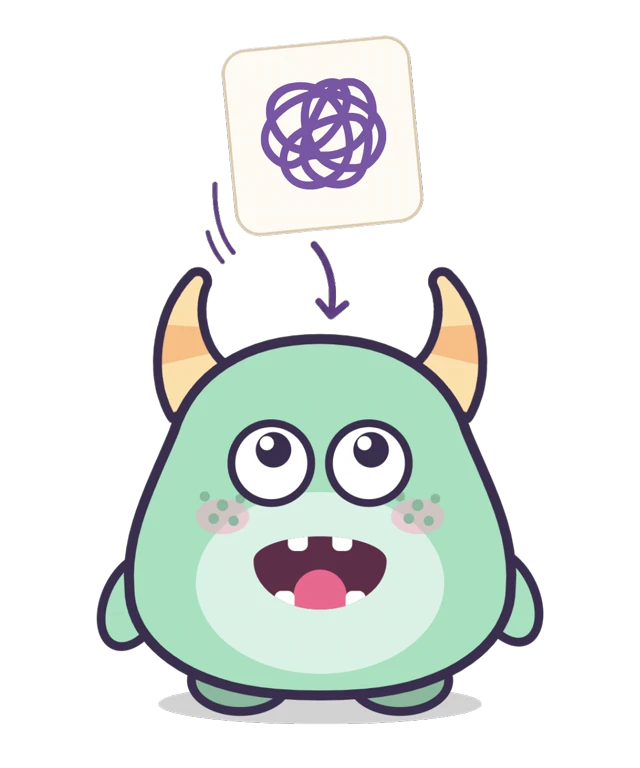
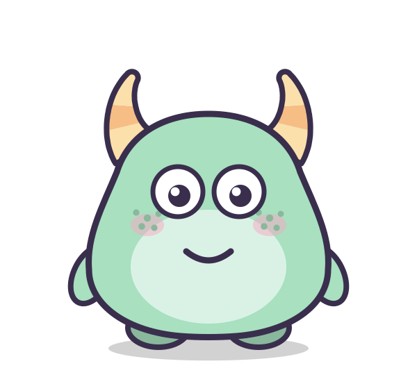
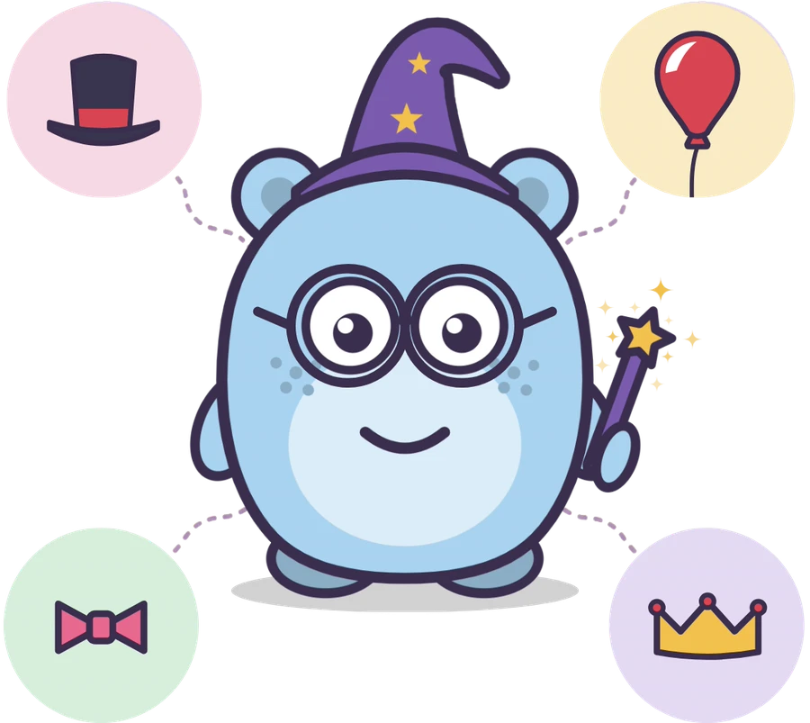
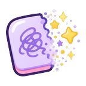
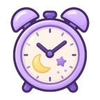
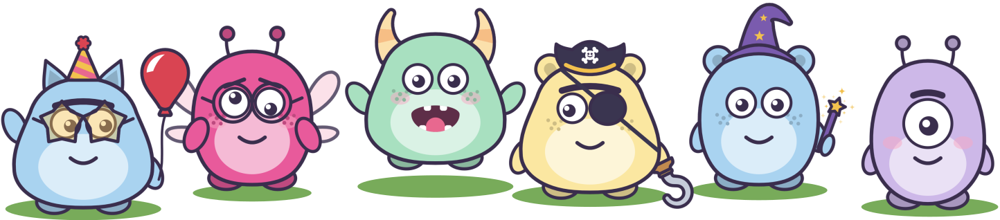

How it works
-
Different ways to express a worry
Children can draw, type, colour or record what’s on their mind.
-

Feed the worry to their Chomper
Their Chomper gobbles up the worry, helping them to let it go.
-
You were brave to share that.

Their Chomper responds
A mix of supportive and playful messages - never advice.
Customise their own unique Chompers
Millions of combinations of shapes, colours and accessories to choose from.
Each child can have their own Chomper
Assign each Chomper to a child to keep their worries separate.

Understand your child’s worries
Every worry gets saved to a separate grown-ups area for you to read later.
-
Just for grown-ups
A separate area with important information and settings, behind a short reading challenge a young child cannot pass.
-

Choose what happens to a worry
Always keep it, let your child choose each time, or never keep it. Kept worries are saved in the Chomper’s tummy, so you can look back at them together later.
-

Worry Time
Worry Time gives you a simple way to sit down with your child and talk about anything that’s been worrying them. It can be part of bedtime, after school, or whenever works best for you.
Worry Chompers is a playful way for children to express and let go of worries. It is not medical advice, therapy, or crisis support, and it is not a substitute for talking with a trusted adult. If you are worried about your child, please speak to your GP or another qualified professional.
Nothing ever leaves your device
No account, no cloud, and no internet permission at all.
-
Private by default
There are no accounts and no sign-in. The app shows no adverts and contains no analytics, tracking, or advertising tools of any kind.
-
Kept on this device
Everything your child makes - their drawings, words, recordings and their Chomper - is kept only on this device.
-
Saving a copy
The only time anything your child makes leaves the app is when you, as a grown-up, deliberately choose to save a copy. There is no way for a child to share a worry out of the app.
